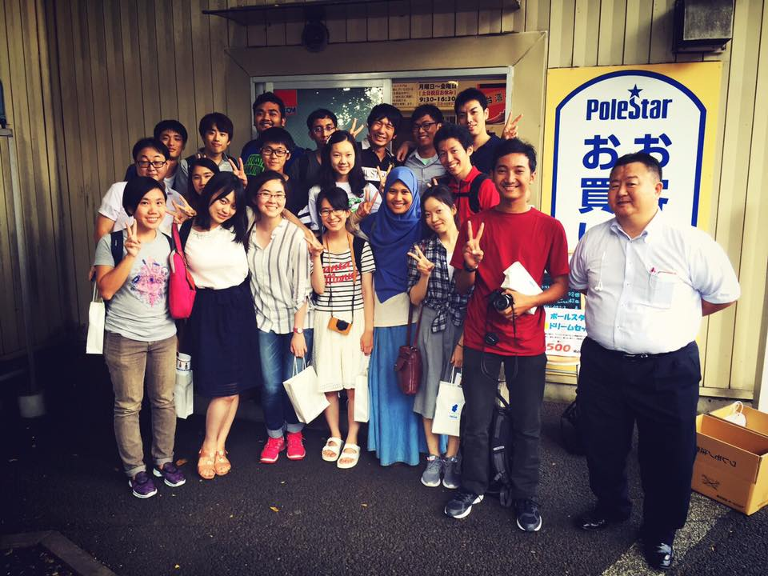
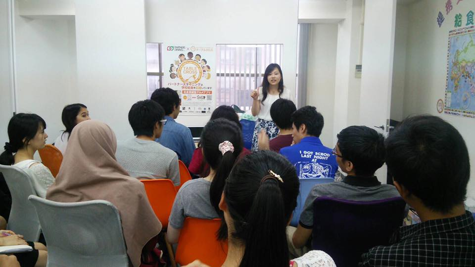
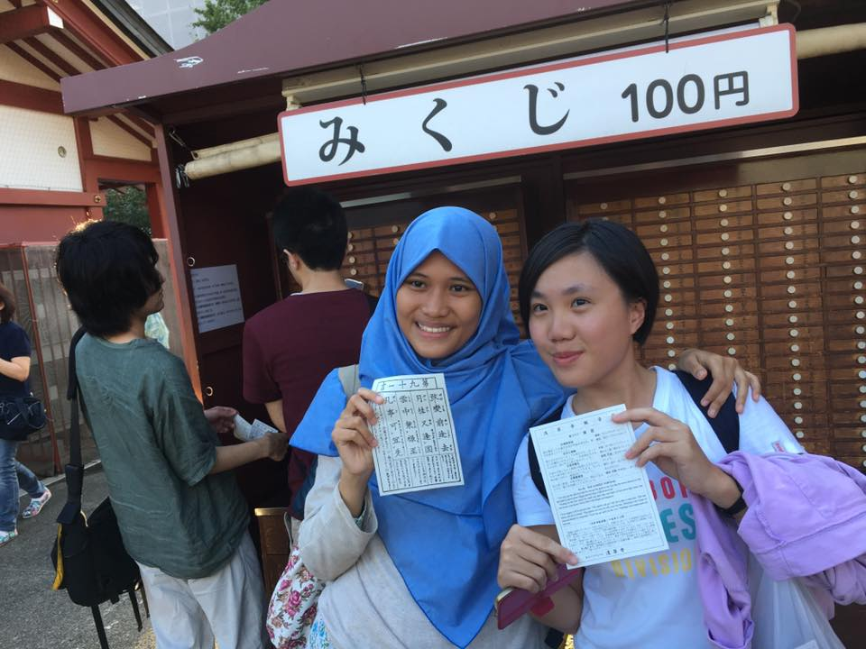
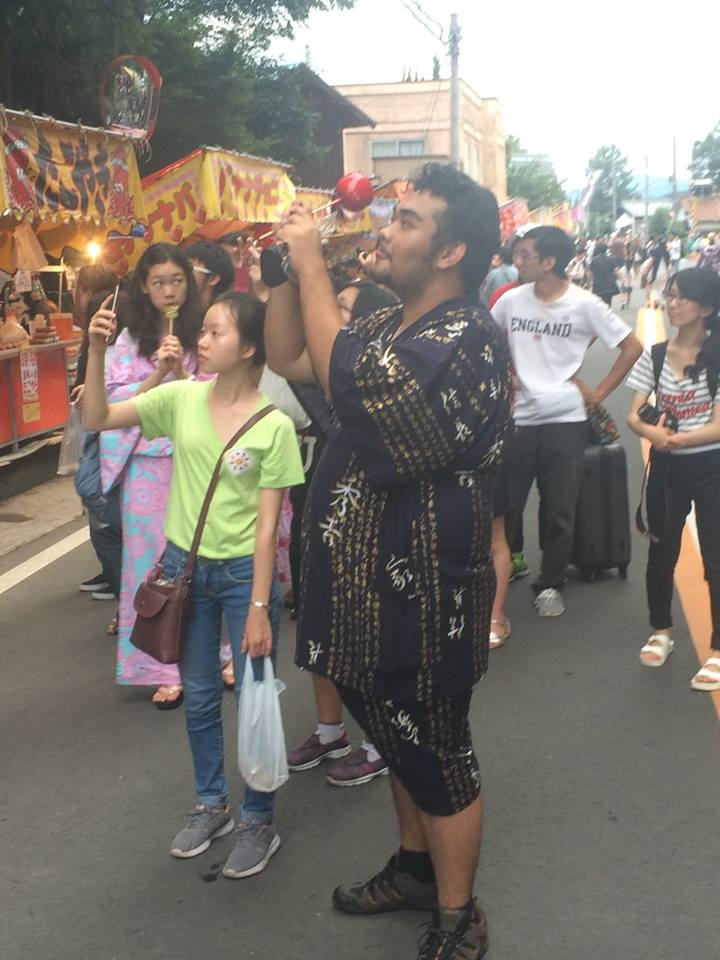
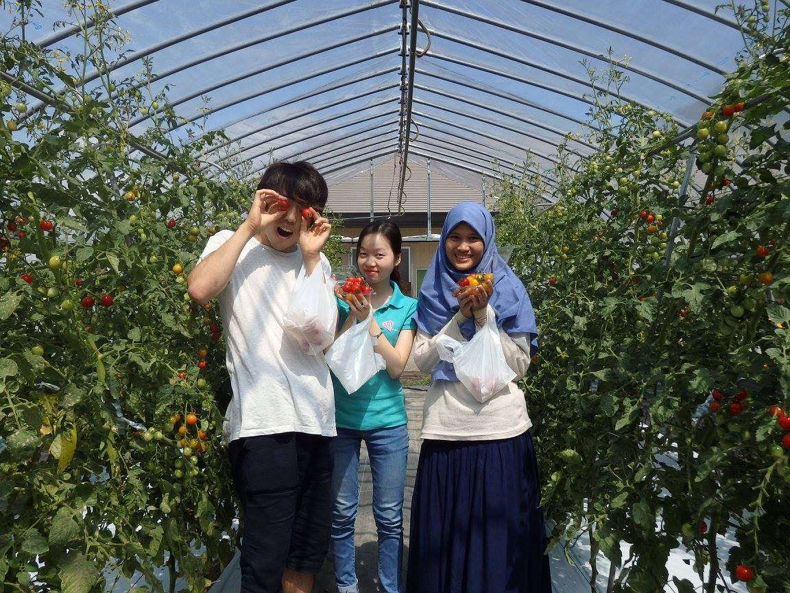
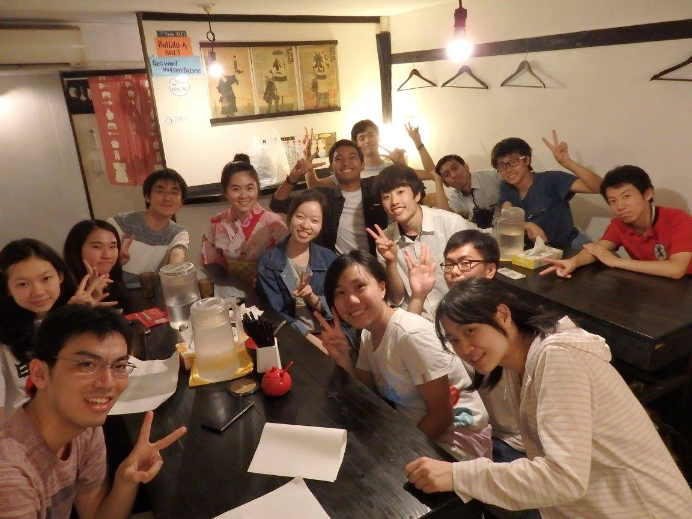
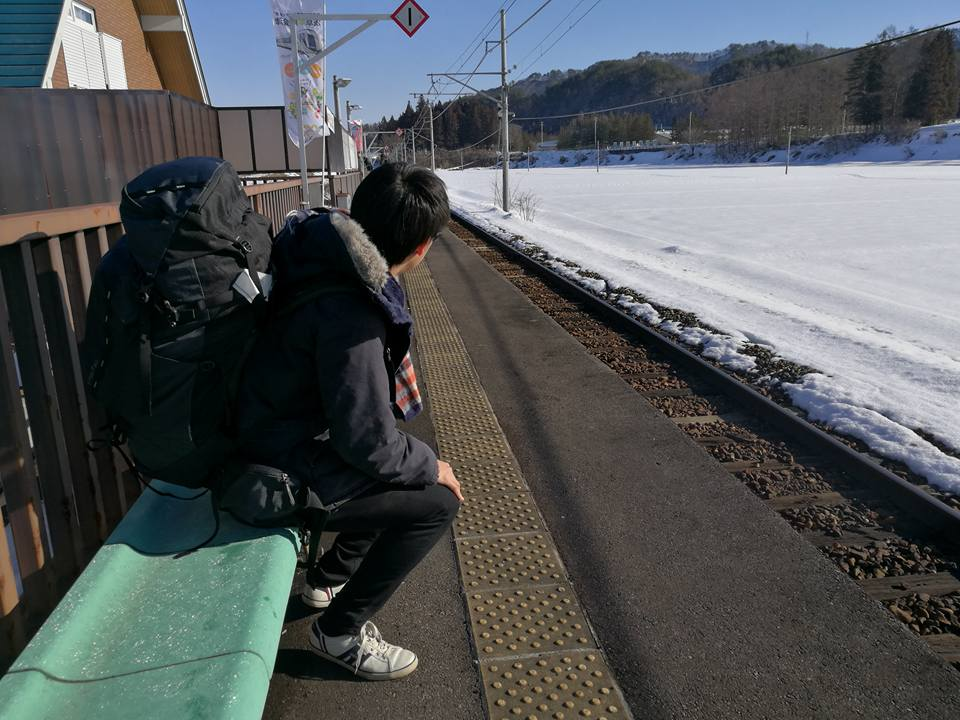

東南アジアをメインに活動するMISには、日本で活動するチームもあります。それが、JOSI(Japan Overseas Students Interaction)です。東南アジア・インドにおいて問題を発見・解決するに留まらす、私たちは日本に存在する問題をテーマに、Experience Japanプロジェクトを掲げて活動しています。Experience Japanは今年3年目を迎えました！
MISの、各国に次世代リーダーを輩出するという目的を達成するには、学生が主体的に問題を発見し解決する視点やモチベーションを持つように成長していく必要があります。そのために、私たちのチームJOSI(Japan Overseas Students Interaction)は、日本に東南アジアの学生を誘致して日本の問題について扱うことによって、自国を離れた学生たちがテーマについて学ぶのみに留まらず、日本という国について学び、複数の国から集まった学生の価値観を理解するという様々な意味合いにおける学びを体験する場をデザインしていきます！
第2回となる2016年度のプロジェクトでは、テーマを「食の重要性とは何か」に設定しました。プロジエクトを通じて食に関する広い知識・視野を獲得し、それらを複合的に考えることで食の本質を考察し、現代の食問題を個々人で発見して解決策を議論しました。参加者は、インドネシア・マレーシア・ミャンマー・ベトナムから計9人がやって来ました！


プログラムは２つのフェーズに分かれました。前半は東京で、後半は福島県南会津郡で行いました。
東京では食に関連する様々な企業に訪れました。ポールスタア(無添加商品)、清水屋(和菓子)、草加煎餅丸草一福(伝統食)、TABLECROSS(アプリケーション)といった様々な視点から見つめた食のあり方を学びました。その知識や、4日感東京に滞在した経験から、東京オリンピックなどで日本に多くの外国人旅行者が来た時にどのような問題が生じるかを考え、解決策を食品関連企業の社長が集った国際ロータリークラブにおいて3チームに分かれてプレゼンテーションをしました。
加えて、東京では参加者と共に東京ジャーミーというモスクに訪れたり、浅草で観光したり、生姜祭りというお祭りに参加したりと、文化体験も楽しみました。浅草で浴衣を買ったりお祭りで屋台に立ち寄ったりと、参加者は日本をとても満喫していました！


福島県南会津郡では、主に農業者の方々にお話を伺いました。伊南の郷(トマト収穫)、JA会津よつば(トマト選果)、アジプロファーム(里山)、土っこ田島ファーム(六次産業)、山王茶屋(伝統食)に訪れ、農業に携わる人々だからこその強い問題意識を垣間見ることができました。南会津フェーズの集大成として、南会津においての食に関する問題点とその解決策を一人一人プレゼンテーションしました。どの提案も素晴しいもので、東南アジアの学生の能力の高さを強く感じました。


内容からすごく真面目そうに思えるかもしれませんが、プログラム中は好奇心旺盛な東南アジア学生のテンションの高さに持って行かれて、楽しくコミュニケーションできます！日本のいろんなことについて質問されるので、日本について再発見がありますし、様々な国について全く知らなかったこともたくさん学ぶことのできるチャンスです！
冬には南会津にてミーティング合宿を行いました！自然豊かで、ジムもボルダリングもペッパーくんも完備している宿泊地のCloud Campも、JOSIの魅力のひとつでもあります！
今年度は、Beyond the Borderと銘を打ち、障害者についてプロジェクトを実施する予定です。ボーダーの無い社会を実現するためにはどうした良いか、ぜひ一緒に東南アジアの学生と共に考えてみませんか？
活動に興味を持ってくれた人は、ぜひJOSIまで話を聴きに来てください！

Experience JapanのFacebookページです！気軽にコンタクトしてください！
JOSIリーダー 黛 風雅